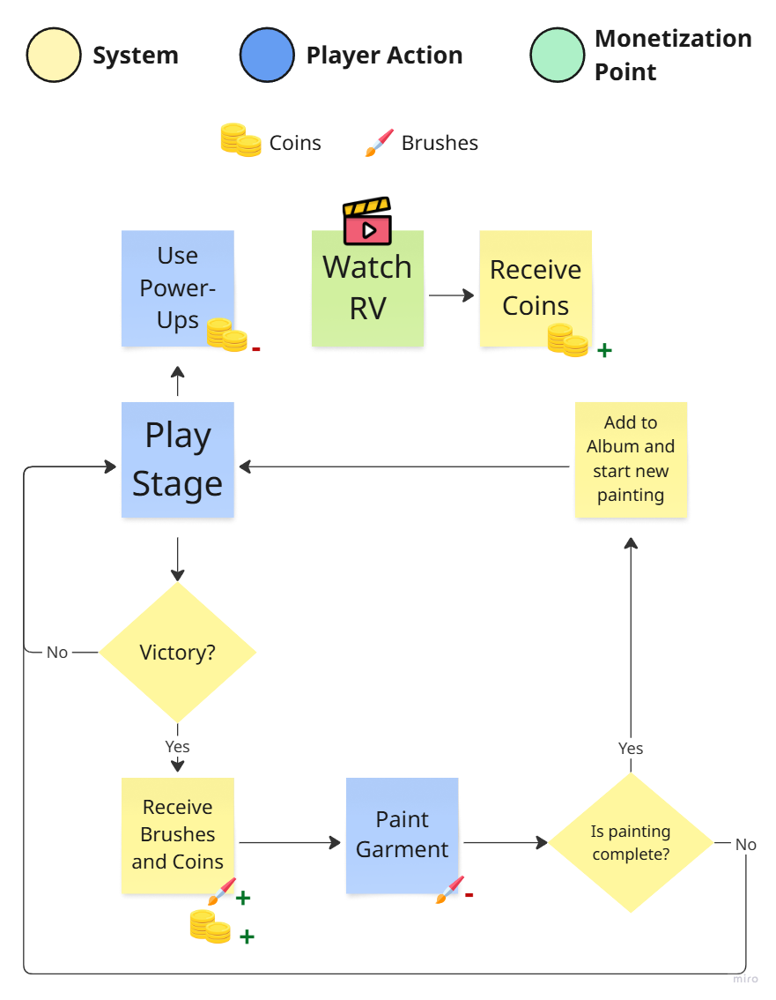
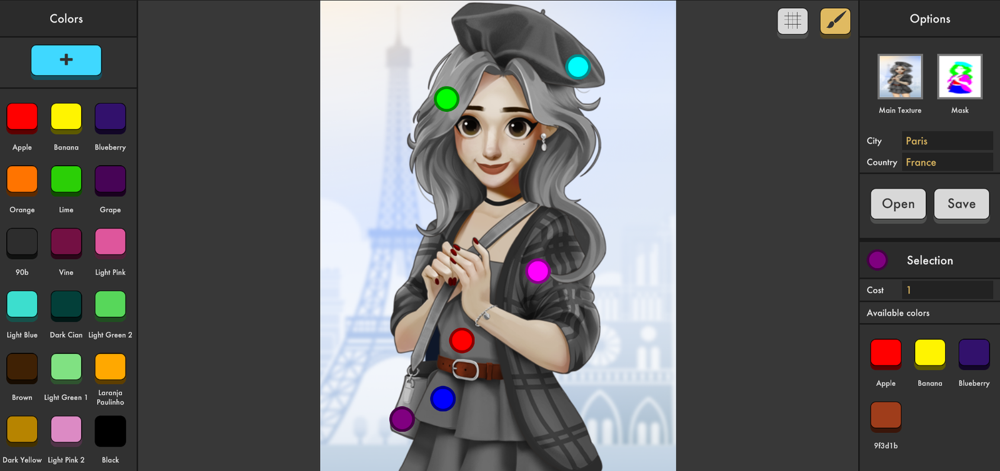
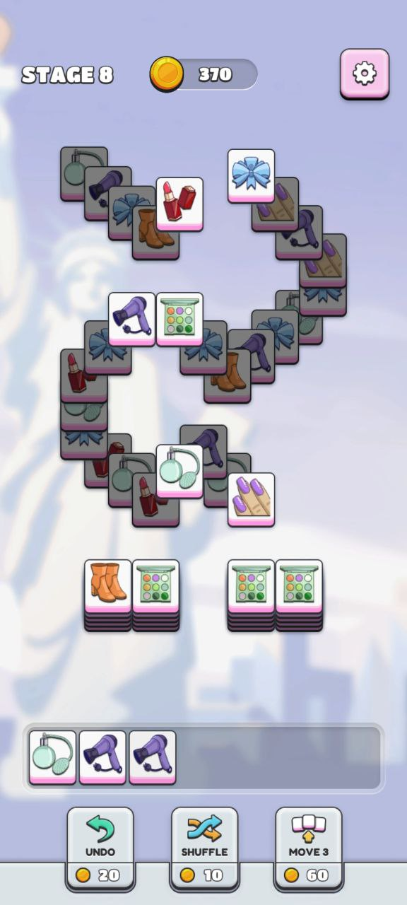
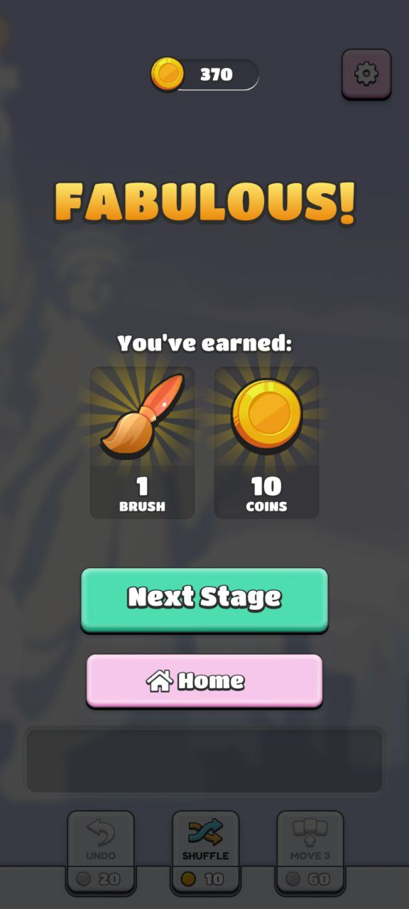
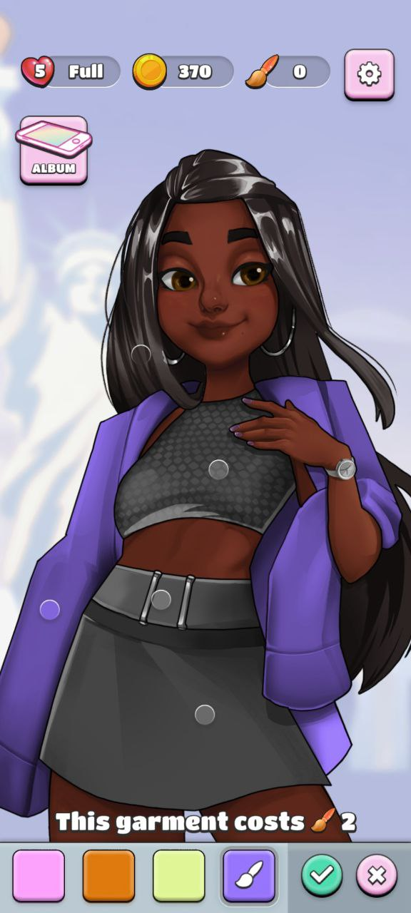
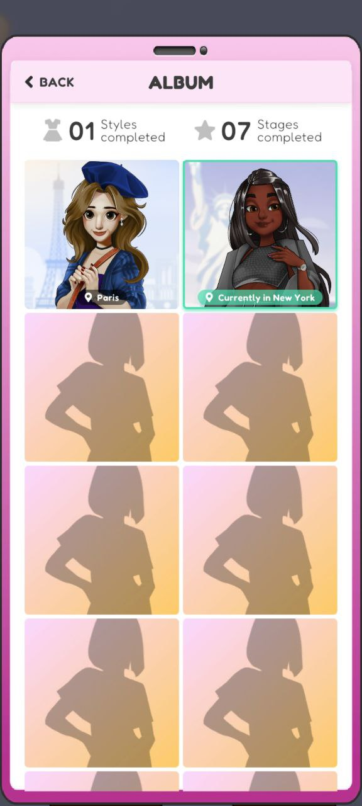
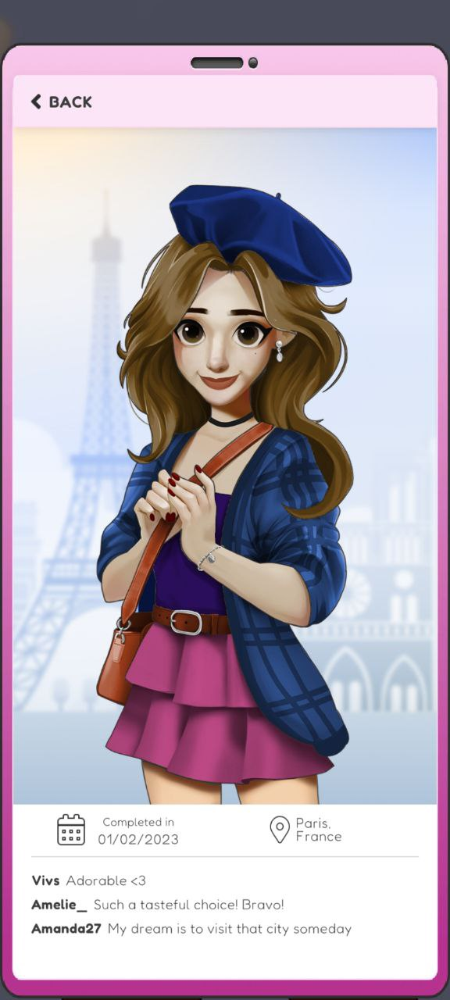

Fashion Match
- StudioGazeus Games
- RoleSenior Game Designer
- PlatformAndroid / iOS
Project Overview
A Tile Match game — a slight twist on the usual Mahjong rules. Fashion Match is a casual game where players advance through numerous stages by solving matching puzzles. The meta element is painting different images of fashion models and completing an album with the players’ creations.
The game is the result of an R&D initiative at Gazeus, where I helped shape the process that led to it. The game is no longer online following a change in strategy by the company, but I’m proud of what we built.
My Responsibilities
- Designing all gameplay systems, using extensive references from benchmark research.
- Guiding the dev team in the creation of content development tools.
- Conducting an R&D process with multiple experiments, data analysis and optimization of company resource usage.
Key Results
- Validated an internal development pipeline for testing new projects
Project Highlights
Economy Design
Although simple, the game offered clear opportunities for rewarded videos. As stages become harder, players have an increasing need for Power-ups, which cost coins to use. By using these power-ups and advancing through stages, players receive Brushes, which are used to paint images and complete the Album, thus advancing on the Meta.

Content Development Tools
Fashion Match needed a good amount of content: stages and pictures to paint.
I helped the dev team understand the needs of the project and develop tools to be used by non-programmers. This resulted in a stage creator (used mainly by me) and a painting editor (used by the artists to add color options to the masked areas of each painting).

Screenshots




